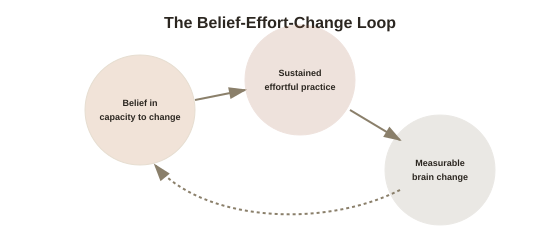

Chapter 5: Belief, Expectation, and the Brain
Chapter 4 closed on the mirror box — a case where a visual expectation directly changed a physical sensation. This chapter takes that thread and generalizes it: belief and expectation are not just psychological add-ons to the mechanisms covered so far, they measurably shape which plastic changes happen, how much effort gets invested in producing them, and even how the brain interprets ambiguous internal signals along the way.
Self-efficacy: believing change is possible predicts whether it happens
Psychologist Albert Bandura's concept of self-efficacy (a person's belief in their own capacity to execute the behaviors needed to produce a specific outcome, distinct from general self-esteem or optimism) is one of the most heavily replicated constructs in psychology, with meta-analyses linking it to outcomes across health behavior change, academic achievement, and skill acquisition. The mechanism isn't mystical: someone with low self-efficacy for a specific skill tends to give up sooner after setbacks, avoid the harder practice that would actually produce improvement, and interpret difficulty as evidence they lack ability rather than as a normal part of the learning curve — meaning the belief doesn't rewire the brain directly, but it substantially determines whether the sustained, effortful practice (Chapter 1's actual mechanism of change) happens at all.
Expectation changing what the brain does with ambiguous signals
A more direct neural link comes from research on how expectation shapes perception itself, not just persistence. Studies using brain imaging have found that expecting a stimulus to be painful, difficult, or effortful measurably changes activity in regions processing that stimulus before the "objective" input even arrives in full — a genuine top-down effect, where belief about what's coming shapes the neural processing of what actually does come. This isn't the same claim as pure placebo (already covered in depth elsewhere in this library), but it draws on an overlapping mechanism: expectation is not a passive readout of what the brain predicts, it's an active input that shapes downstream processing.

The direction of causation, tested directly
A genuinely elegant study by researcher Alia Crum and colleagues tested this causally rather than just observationally: hotel room attendants, whose daily work already meets recommended exercise guidelines through physical activity, were split into two groups. One group was explicitly told their work qualified as good exercise, with specific examples of the calories burned; a matched control group received no such information, despite doing the same physical work. Weeks later, the informed group showed measurable improvements in weight, blood pressure, and body fat percentage relative to the uninformed group — despite no actual change in behavior, only in what the participants believed about the value of what they were already doing. This is a striking demonstration that mindset can measurably affect physiological outcomes independent of any change in the underlying activity itself.
Where belief's role stops being about biology and becomes about behavior
It's worth being precise about what this evidence does and doesn't establish, in the spirit of this arc's ongoing honesty about limits: the hotel attendant study measured physiological outcomes from an activity that was already happening — it's not evidence that belief alone, absent any actual physical or behavioral change, can substitute for effort. The more defensible, well-supported synthesis across this chapter's evidence is a two-part claim: belief shapes whether and how consistently effortful change-producing behavior occurs (via self-efficacy), and belief can additionally shape the body's own response to activity that is genuinely happening (via mechanisms closer to the placebo pathway) — two real, distinct, non-magical routes by which "just believing" measurably matters, without belief alone rewiring anything in the absence of underlying behavior.
Why this sets up the rest of the arc
With this chapter's groundwork in place, the rest of this topic can be read as tracing exactly how belief and effort interact across different domains: deliberate skill practice (Chapter 6), the specific belief structure known as growth mindset (Chapter 7), automatic habits (Chapter 8), and meditation (Chapter 9) all involve some combination of the same two ingredients this chapter has now separated out — sustained effortful engagement, and the beliefs that determine whether that engagement happens and how it's sustained.
Try this
Ideas for noticing or testing this in your own life.
- Notice a skill where your self-efficacy feels low — pay attention to whether that belief is shaping how much you actually practice, separate from any real assessment of your underlying ability.
- Try the Crum study's reframe directly: pick an activity you already do (a daily walk, physical chores) and deliberately notice its real, concrete value rather than treating it as incidental — then notice whether that changes how you experience doing it.
Worth pulling on?
A few loose threads from this chapter — if any of these genuinely grab you, that's a good sign of where to go next.
- Self-efficacy determines whether sustained practice happens — the next chapter gets into what that practice actually needs to look like to produce real change. → The subject of the next chapter: deliberate practice and skill acquisition.
- The Crum hotel-attendant study sits close to a broader, well-evidenced phenomenon covered directly elsewhere in this library. → Already in the library: Placebo & Nocebo Effects covers the mechanism this chapter draws on in more depth.